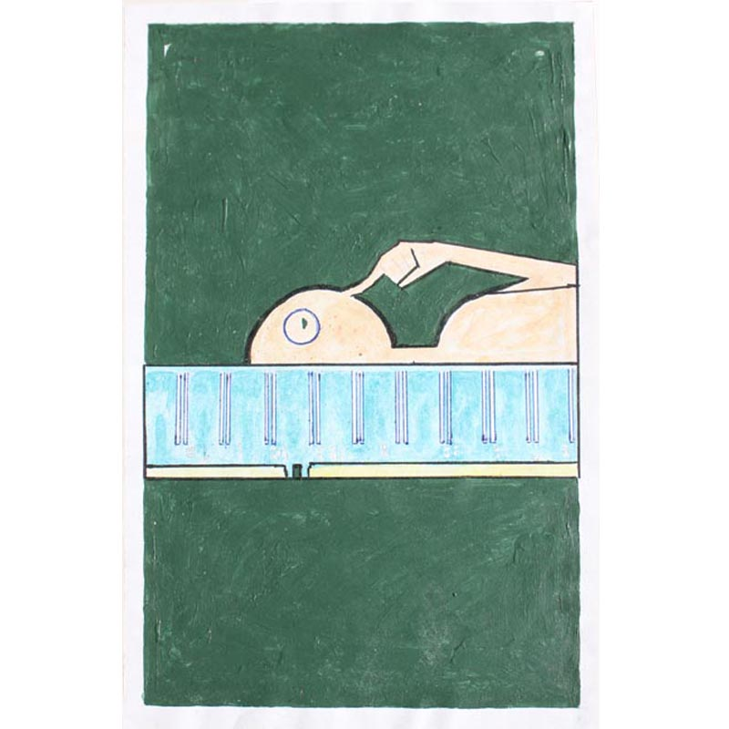A tarot card based on sensory memory in people and computers.
Painting on paper.
2009, Emily Schleiner"> 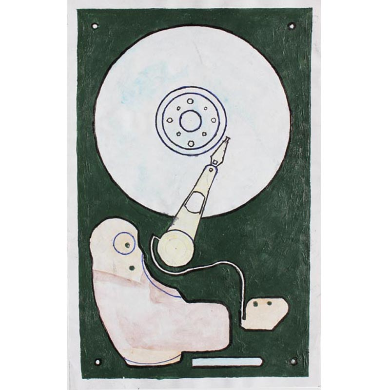A tarot card based on long term memeory in people and computers.
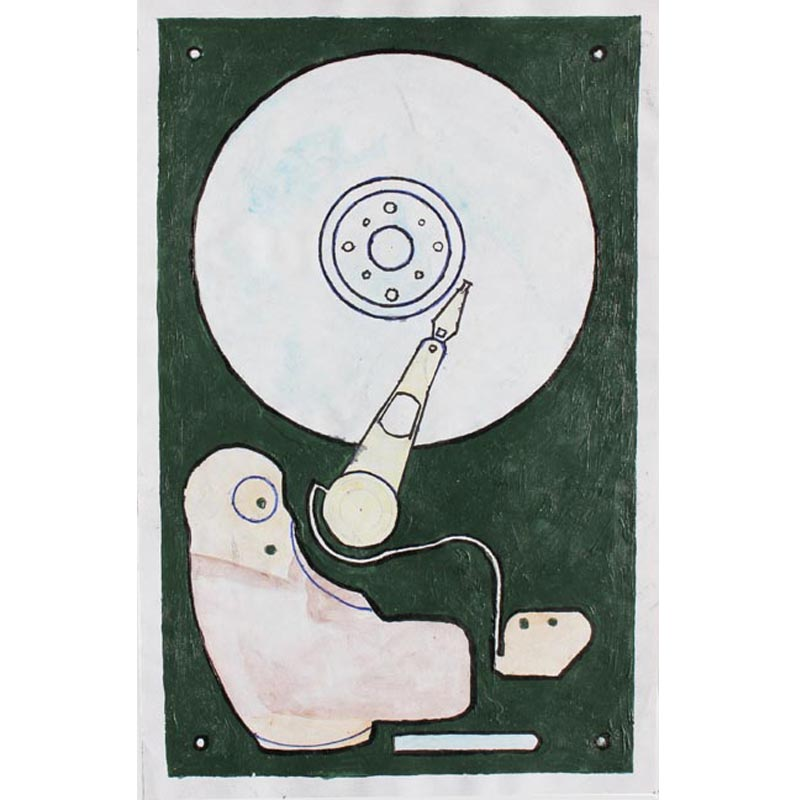A tarot card based on long term memeory in people and computers.
Painting on paper.
2009, Emily Schleiner"> 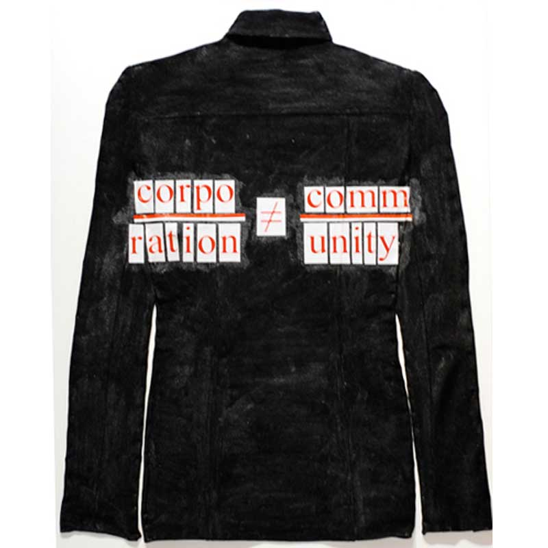Wordplay on a business jacket
Multimedia on canvas
2007, Emily Schleiner"> 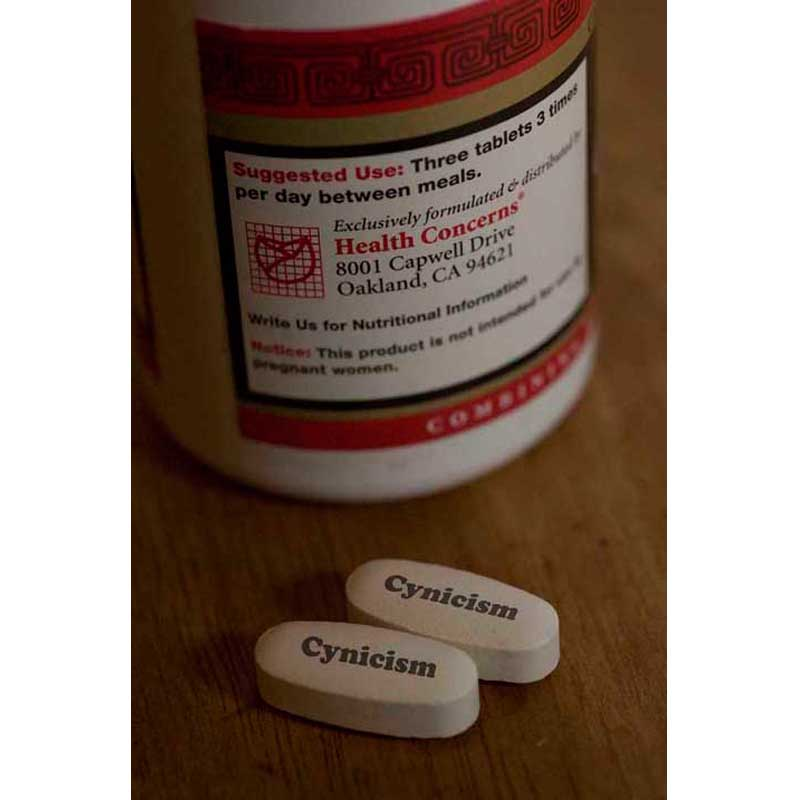Digital Composite
2007, Emily Schleiner"> 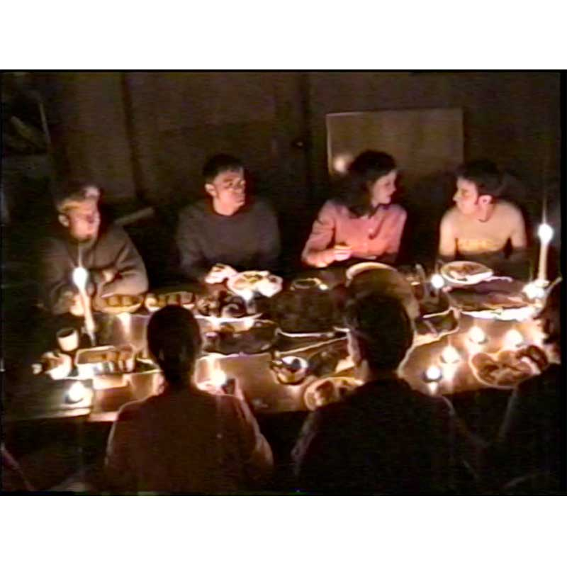Performance
Video Still
2003, Emily Schleiner"> 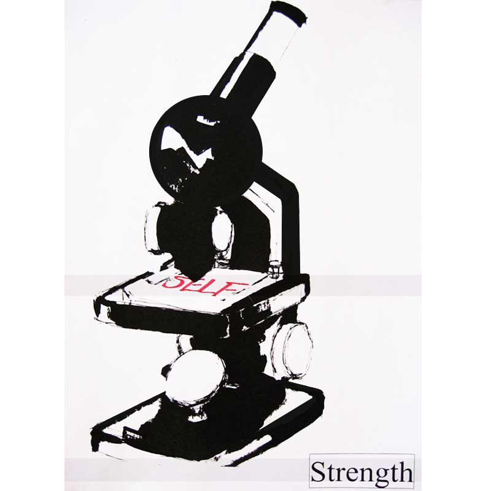Flyer
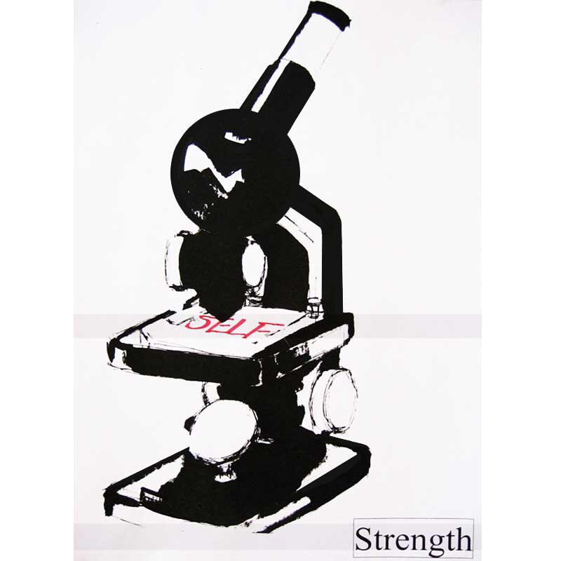Flyer
2006, Emily Schleiner">


Painting on paper.
2009, Emily Schleiner">
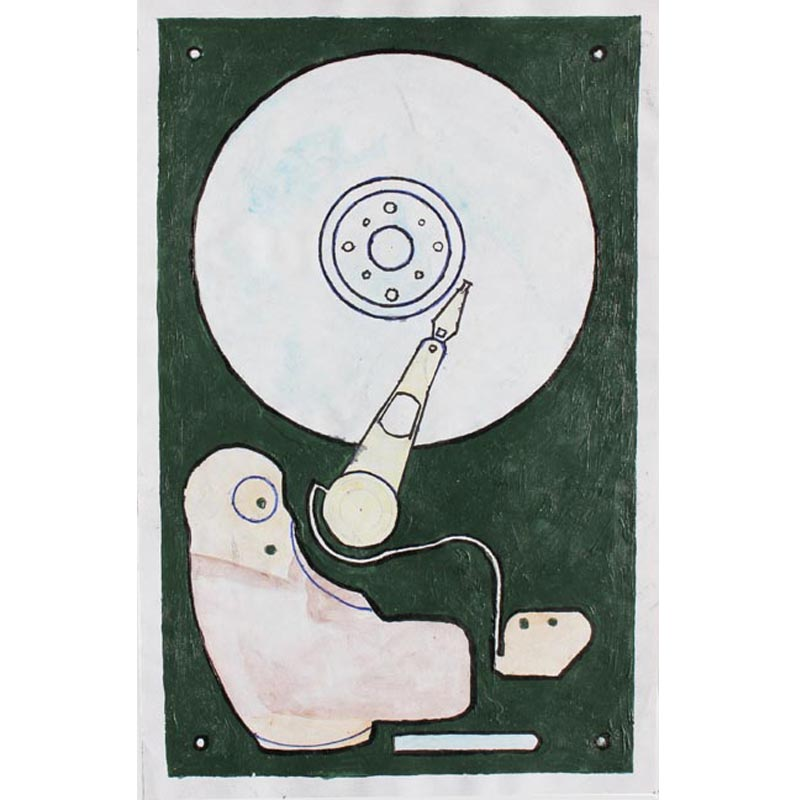A tarot card based on long term memeory in people and computers. Painting on paper.
2009, Emily Schleiner"> 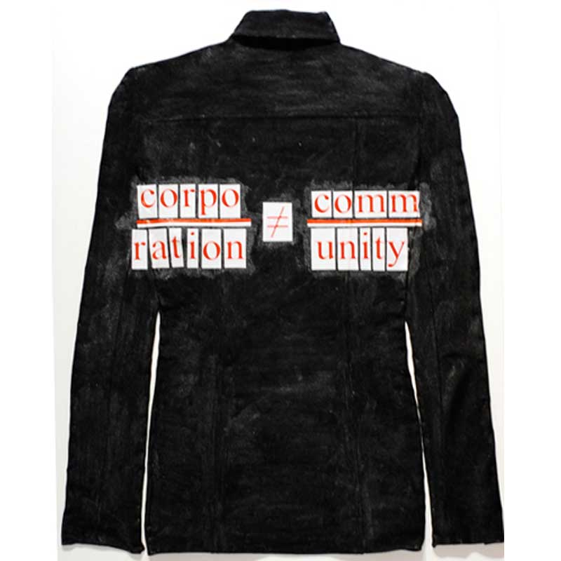Wordplay on a business jacket
Multimedia on canvas
2007, Emily Schleiner"> 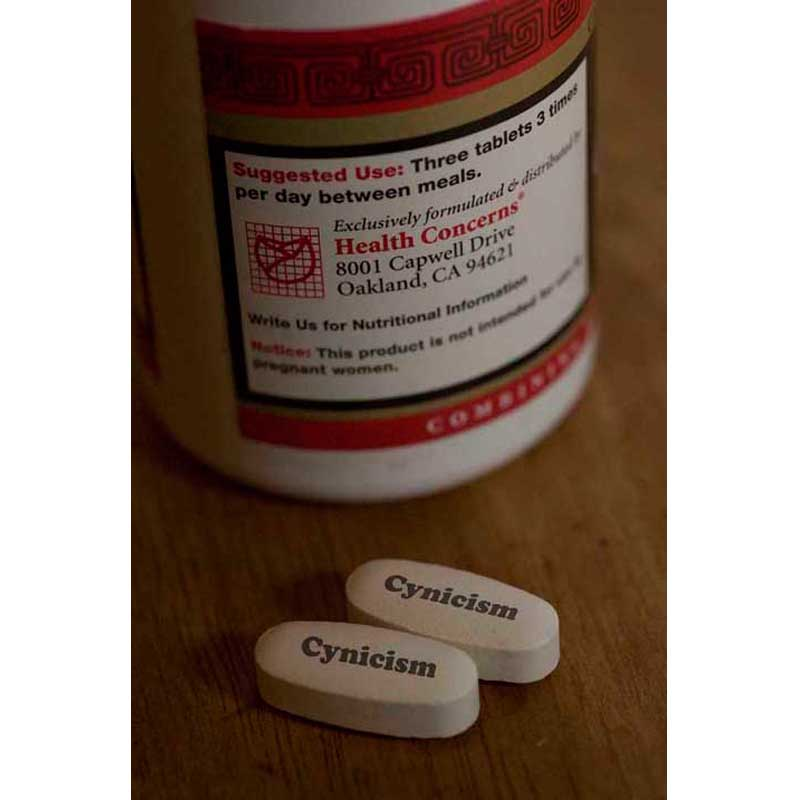Digital Composite
2007, Emily Schleiner"> 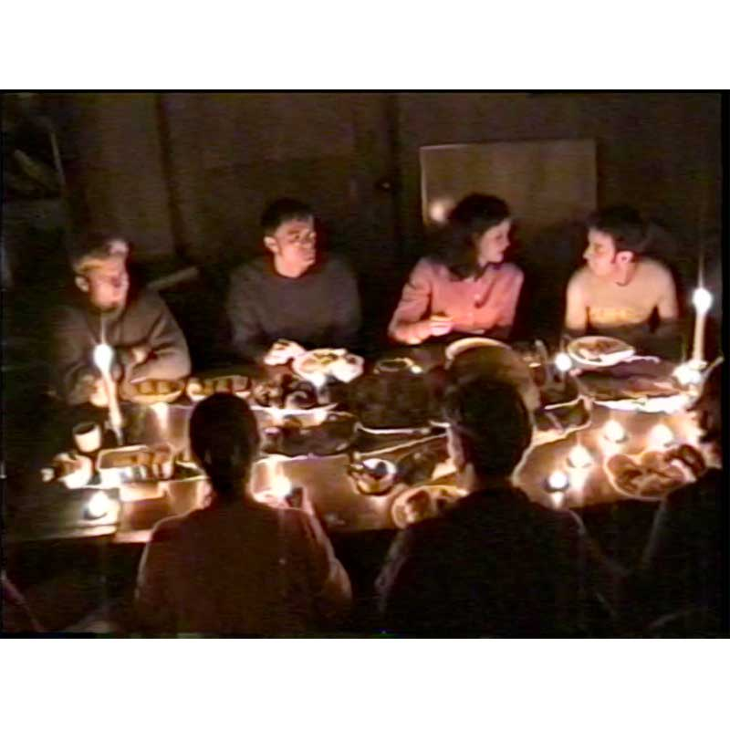Performance
Video Still
2003, Emily Schleiner">
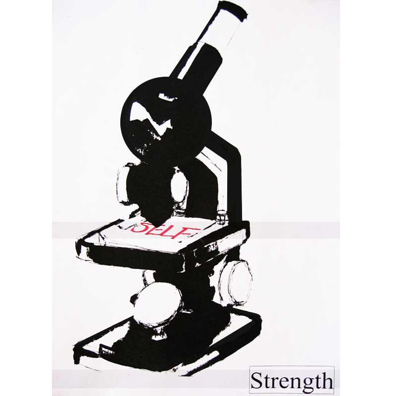Flyer 2006, Emily Schleiner">
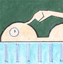
 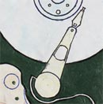
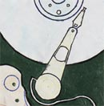